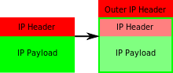

容器网络
网络栈
被隔离的容器进程，该如何跟其他 Network Namespace 里的容器进程进行交互呢？
- docker创建虚拟网桥

- 被限制在 Network Namespace 里的容器进程，实际上是通过 Veth Pair 设备 + 宿主机网桥的方式，实现了跟同其他容器的数据交换
容器跨主机通讯
- overlay网络

Flannel
通讯原理
网络模型和CNI插件
- 一方面，Kubernetes 项目并没有使用 Docker 的网络模型（CNM），所以它并不希望、也不具备配置 docker0 网桥的能力；
- 另一方面，这还与 Kubernetes 如何配置 Pod，也就是 Infra 容器的 Network Namespace 密切相关。
- Kubernetes 在启动 Infra 容器之后，就可以直接调用 CNI 网络插件，为这个 Infra 容器的 Network Namespace，配置符合预期的网络栈。
CNI基础可执行文件
- Main 插件，它是用来创建具体网络设备的二进制文件,bridge（网桥设备）、ipvlan、loopback（lo 设备）、macvlan、ptp（Veth Pair 设备），以及 vlan。
- IPAM（IP Address Management）插件，它是负责分配 IP 地址的二进制文件。dhcp,hostlocal分配预先制定的IP地址
- CNI 社区维护的内置 CNI 插件,tuning，是一个通过 sysctl 调整网络设备参数的二进制文件；portmap，是一个通过 iptables 配置端口映射的二进制文件；bandwidth，是一个使用 Token Bucket Filter (TBF) 来进行限流的二进制文件。
容器网络方案
- 实现这个网络方案本身，配置宿主机路由、配置 ARP 和 FDB 表里的信息等等。
- 实现该网络方案对应的 CNI 插件。这一部分主要需要做的，就是配置 Infra 容器里面的网络栈，并把它连接在 CNI 网桥上
host-gw
- host-gw 模式的工作原理，其实就是将每个 Flannel 子网（Flannel Subnet，比如：10.244.1.0/24）的“下一跳”，设置成了该子网对应的宿主机的 IP 地址。
- Flannel host-gw 模式必须要求集群宿主机之间是二层连通的
Calico
- BGP协议 在大规模网络中实现节点路由信息共享的一种协议
- 在每个边界网关上都会运行着一个小程序，它们会将各自的路由表信息，通过 TCP 传输给其他的边界网关。而其他边界网关上的这个小程序，则会对收到的这些数据进行分析，然后将需要的信息添加到自己的路由表里。
- CNI插件
- Felix 负责在宿主机上插入路由规则（即：写入 Linux 内核的 FIB 转发信息库），以及维护 Calico 所需的网络设备等工作。
- BIRD 专门负责在集群里分发路由规则信息
- Node to Node mesh模式
- Route reflector
IPIP模式
- IP 包进入 IP 隧道设备之后，就会被 Linux 内核的 IPIP 驱动接管。IPIP 驱动会将这个 IP 包直接封装在一个宿主机网络的 IP 包中

- Node 2 的网络内核栈会使用 IPIP 驱动进行解包，从而拿到原始的 IP 包
Calio原理
实验